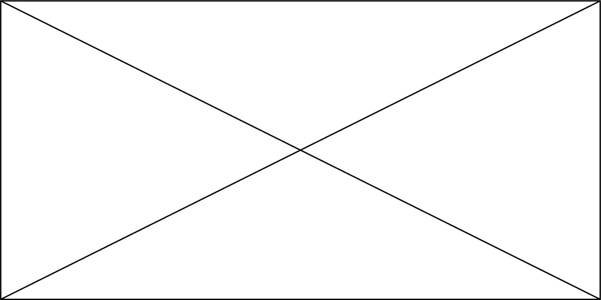
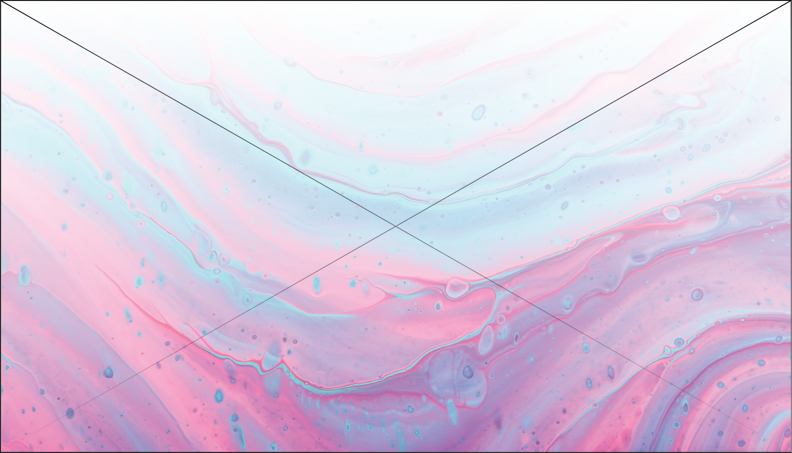

Step One
The idea arrives, or you do. Whichever comes first, it takes up my mind as I begin to ask the big questions. What are the goals of the site? Who is it for? Is this a rebrand? Why should it exist? Are there other websites or services like this? Ultimately, we disect the problem as much as possible before sowing it up with the solution.
Step Two
Next up, the exploration. Inspiration comes in many forms, and the world is full of them. Whether they are sites you like, or colors that work best with the brand, we learn more about the identity of the website. Of course, flow follows function, so we also sketch the blueprint of the website - the wireframe. Don't worry - it's much more difficult than it sounds.
Step Three
Finally, I work my magic and do the coding. This will make you stay firmly on your seat, not near the edge at all. I'll incorporate the wireframe and moodboard into the website. With an Agile mindset in gear, collaboration and communication will bring this idea to life!